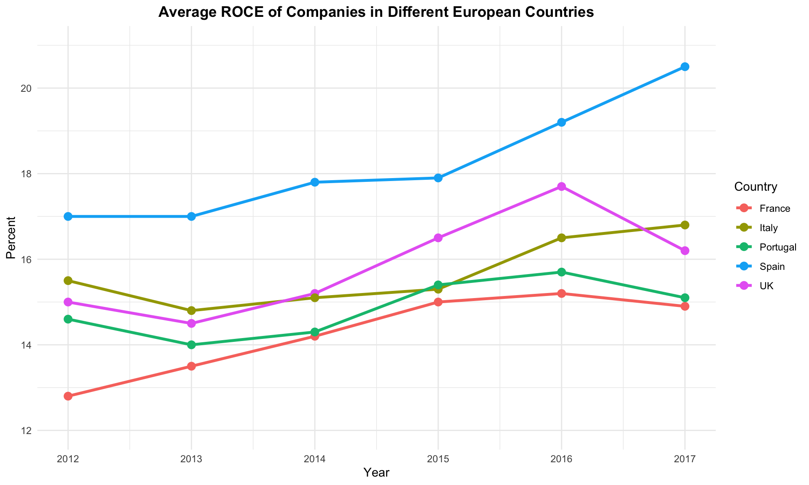
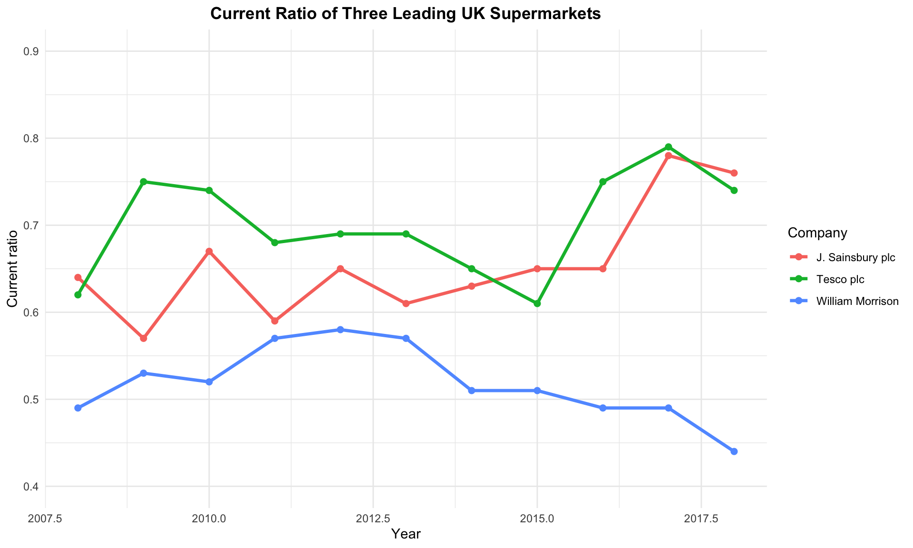

flowchart TD
A[Financial planning] --> B[Investment project appraisal]
A --> C[Finance function]
A --> D[Financing and capital market operations]
C --> B
C --> D
C --> E[Financial control]
E --> B
E --> D
Day 1: Financial Framework & Analysis
2025-05-15
Welcome to the intensive 4-day Corporate Financial Management module. This condensed format covers the essential concepts and techniques needed for effective financial decision-making in modern organizations.
Module Learning Outcomes
By the end of this module, you will be able to:
Financial management involves making key decisions about how resources are acquired and utilized within an organization. The finance function serves as the nexus for critical business activities.
flowchart TD
A[Financial planning] --> B[Investment project appraisal]
A --> C[Finance function]
A --> D[Financing and capital market operations]
C --> B
C --> D
C --> E[Financial control]
E --> B
E --> D
The finance manager’s responsibilities typically include:
Discussion point: What financial management challenges have you observed or experienced in your organization?
The conventional view holds that the primary objective of a business is shareholder wealth maximization. This objective:
Shareholders have specific characteristics that justify prioritizing their interests:
However, pursuing shareholder wealth maximization can be problematic:
Unlike shareholder wealth maximization, profit maximization as a sole objective has significant limitations:
Key Insight
Maximizing profit in a single period may actually diminish shareholder wealth over the long term due to factors like reduced investment, damage to reputation, or increased risk.
The principal-agent relationship creates potential conflicts:
The UK Corporate Governance Code aims to mitigate these issues by ensuring:
The code covers five main areas: 1. Board leadership and company purpose 2. Division of responsibilities 3. Composition, succession and evaluation 4. Audit, risk and internal control 5. Remuneration
Financial statements provide the foundation for all financial analysis and decision-making.
| £000 | £000 | |
|---|---|---|
| Credit sales revenue | ||
| Less Cost of sales: | ||
| Opening inventories | ||
| Add Purchases | ||
| Less Closing inventories | ||
| Gross profit | ||
| Less: | ||
| Credit card discounts | ||
| Rent and rates | ||
| Other costs | ||
| Depreciation of fittings | ||
| Profit for the period |
| £000 | |
|---|---|
| ASSETS | |
| Non-current assets | |
| Fittings | |
| Less Accumulated depreciation | |
| Current assets | |
| Inventories | |
| Trade receivables | |
| Total assets | |
| EQUITY AND LIABILITIES | |
| Equity | |
| Share capital | |
| Retained earnings | |
| Current liabilities | |
| Trade payables | |
| Bank overdraft | |
| Total equity and liabilities |
Financial statements provide information about:
This information helps stakeholders assess: - Past performance - Current position - Future prospects
Financial ratio analysis provides a systematic approach to evaluating a company’s financial health. Ratios help transform raw financial data into meaningful insights.
The Financial Health Framework
flowchart TD
A[Financial ratios] --> B[Profitability]
A --> C[Efficiency]
A --> D[Liquidity]
A --> E[Financial gearing]
A --> F[Investment]
Profitability ratios measure a company’s ability to generate earnings relative to sales, assets, and equity.
| Ratio | Formula | Purpose |
|---|---|---|
| Return on Ordinary Shareholders’ Funds (ROSF) | \(\frac{\text{Profit for the year less preference dividend}}{\text{Ordinary share capital + Reserves}} \times 100\) | Measures return earned for ordinary shareholders |
| Return on Capital Employed (ROCE) | \(\frac{\text{Operating profit}}{\text{Share capital + Reserves + Non-current liabilities}} \times 100\) | Evaluates efficiency of all long-term capital |
| Operating Profit Margin | \(\frac{\text{Operating profit}}{\text{Sales revenue}} \times 100\) | Shows profitability of operations |
| Gross Profit Margin | \(\frac{\text{Gross profit}}{\text{Sales revenue}} \times 100\) | Indicates basic profitability before other costs |
ROCE can be broken down into its key components:
\(\text{ROCE} = \frac{\text{Operating profit}}{\text{Sales revenue}} \times \frac{\text{Sales revenue}}{\text{Long-term capital employed}}\)
This demonstrates that ROCE is affected by both: - Profit margin (efficiency of operations) - Asset turnover (efficiency of capital usage)

Efficiency ratios evaluate how effectively a company uses its assets and manages its operations.
| Ratio | Formula |
|---|---|
| Average inventories turnover period | \(\frac{\text{Average inventories held}}{\text{Cost of sales}} \times 365\) |
| Average settlement period for trade receivables | \(\frac{\text{Average trade receivables}}{\text{Credit sales revenue}} \times 365\) |
| Average settlement period for trade payables | \(\frac{\text{Average trade payables}}{\text{Credit purchases}} \times 365\) |
| Sales revenue to capital employed | \(\frac{\text{Sales revenue}}{\text{Share capital + Reserves + Non-current liabilities}}\) |
| Sales revenue per employee | \(\frac{\text{Sales revenue}}{\text{Number of employees}}\) |
Efficiency Ratio Interpretation
Liquidity ratios assess a company’s ability to meet short-term obligations.
| Ratio | Formula |
|---|---|
| Current ratio | \(\frac{\text{Current assets}}{\text{Current liabilities}}\) |
| Acid test ratio | \(\frac{\text{Current assets (excluding inventories)}}{\text{Current liabilities}}\) |

UK supermarkets typically operate with current ratios below 1.0 because:
Traditionally, guidelines suggest: - Current ratio: 2:1 - Acid test ratio: 1:1
However, these benchmarks vary significantly by: - Industry - Business model - Market position - Economic conditions
Gearing ratios evaluate the extent to which a company is financed by debt versus equity.
| Ratio | Formula |
|---|---|
| Gearing ratio | \(\frac{\text{Long-term (non-current) liabilities}}{\text{Share capital + Reserves + Long-term (non-current) liabilities}} \times 100\) |
| Interest cover ratio | \(\frac{\text{Operating profit}}{\text{Interest payable}}\) |
Gearing Trade-offs
High Gearing Benefits: - Potential for higher returns to shareholders - Tax advantages of debt (interest is tax-deductible) - No dilution of ownership
High Gearing Risks: - Increased financial risk - Fixed interest obligations - Potential constraints on future borrowing - More vulnerable during economic downturns
Investment ratios help investors assess the attractiveness of a company’s shares.
| Ratio | Formula |
|---|---|
| Dividend payout ratio | \(\frac{\text{Dividends announced for the year}}{\text{Earnings for the year available for dividends}} \times 100\) |
| Dividend cover ratio | \(\frac{\text{Earnings for the year available for dividends}}{\text{Dividends announced for the year}}\) |
| Dividend yield ratio | \(\frac{\text{Dividend per share}}{\text{Market value per share}} \times 100\) |
| Ratio | Formula |
|---|---|
| Earnings per share | \(\frac{\text{Earnings available to ordinary shareholders}}{\text{Number of ordinary shares in issue}}\) |
| Price/earnings ratio (P/E) | \(\frac{\text{Market value per share}}{\text{Earnings per share}}\) |
The P/E ratio and dividend yield vary significantly across industries:
Financial ratios can help predict business failure before it occurs.
Key indicators that may signal potential business failure: - Declining profitability ratios - Deteriorating liquidity ratios - Increasing gearing ratios - Lengthening receivables collection periods - Shortening payables payment periods
The Z-score model combines multiple ratio indicators into a single predictive formula:
\(Z = 1.2a + 1.4b + 3.3c + 0.6d + 1.0e\)
Where: - a = Working capital/Total assets - b = Accumulated retained profits/Total assets - c = Operating profit/Total assets - d = Book value of shares/Total liabilities - e = Sales revenue/Total assets
Interpretation: - Z > 2.99: “Safe” zone - 1.81 < Z < 2.99: “Grey” zone - Z < 1.81: “Distress” zone
While ratios provide valuable insights, they have important limitations:
Data-Related Limitations: - Quality of financial statements - Creative accounting - Inflation effects - Statement of financial position timing issues
Application Limitations: - Over-reliance on ratios - Difficulties in finding comparable benchmarks - Industry-specific factors - Non-financial factors are excluded
Important
Ratios are tools for asking better questions, not providing definitive answers. They should be used as part of a broader analytical framework.
Let’s apply these concepts to solve practical problems:
For the year just ended, Ditto plc had earnings per share of £0.25 and a dividend payout ratio of 60%. The price earnings ratio is 20 times. What is the dividend yield?
Solution:
A business has a ROCE of 20% and a sales revenue to long-term capital employed ratio of 5 times. It has an operating profit of £2m. What is the sales revenue of the business?
Solution: ROCE = Operating profit / Capital employed = 20% Capital employed = Operating profit / ROCE = £2m / 0.20 = £10m
Sales revenue / Capital employed = 5 Therefore, Sales revenue = 5 × £10m = £50m
A business has the following ratios: - Gross profit margin: 25% - Operating expenses to sales: 10% - Interest cover: 3 times - Sales for the period: £20m
What is the profit before tax?
Solution: Gross profit = 25% × £20m = £5m Operating expenses = 10% × £20m = £2m Operating profit = £5m - £2m = £3m Interest cover = Operating profit / Interest expense = 3 Interest expense = Operating profit / Interest cover = £3m / 3 = £1m Profit before tax = Operating profit - Interest expense = £3m - £1m = £2m
In this afternoon’s session, we will explore: - Capital investment decisions - Investment appraisal techniques - Handling risk and uncertainty in investment decisions - Real-world application of investment appraisal
Corporate Financial Management - Day 1 Morning